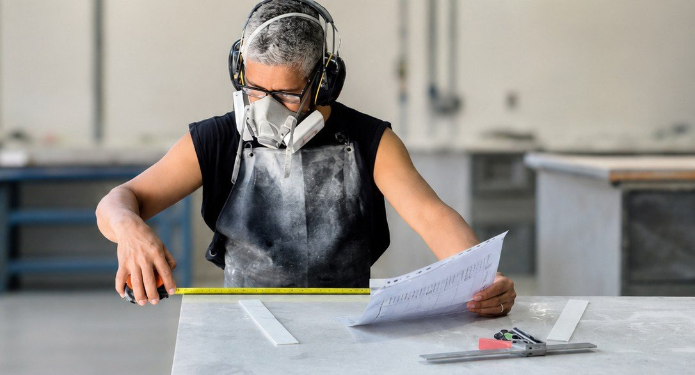

IFL 06 · Cut
CNC Bridge Saw
Automated cutting capability for repeatable benchtops, islands, cut-outs, splashbacks and custom components.
Premium stone masonry, in-house fabrication and professional installation for residential and commercial projects across South East Queensland.
Golden Stone QLD delivers premium stone solutions for homes, joineries, builders and commercial projects across South East Queensland. Our capability covers templating, planning, cutting, polishing, quality control, delivery and installation — managed as one connected workflow.
With 15+ years of hands-on stone industry experience, the team combines practical craftsmanship with process automation and in-house equipment to improve accuracy, consistency and project visibility.
View our capability
Residential and commercial fabrication, measured, made and installed by the one team.

Golden Stone's internal delivery framework connects the complete fabrication journey in one controlled process.
The IFL approach reduces hand-offs and keeps commercial, technical and production decisions connected from the first enquiry through final handover.
Scope & requirements
Clear commercial scope
Site template & checks
Photograph aboveDesign & fabrication planning
Slab selection & allocation
Automated bridge saw
See the sawEdge processing & finishing
See the polishing lineDimensional & finish check
Delivery & professional install
See installed workCompletion & close-out
One integrated workflow — from first enquiry to final installation.
Professional-grade equipment gives Golden Stone direct control over cutting, finishing and production quality.
Automated cutting capability for repeatable benchtops, islands, cut-outs, splashbacks and custom components.

Controlled edge processing and polishing to support consistent finish quality and efficient production.
In-house fabrication supports precision, consistency and direct production control.
Factory: 1819 Tarome Rd, Moorang QLD 4340

A snapshot of recent finished work and the range of surfaces Golden Stone can deliver.

Large island, benchtops and integrated sink cut-out

Stone splashback paired with matching benchtop surfaces

Continuous stone worktop with internal corner detailing

Stone benchtop and sink area for an outdoor setting